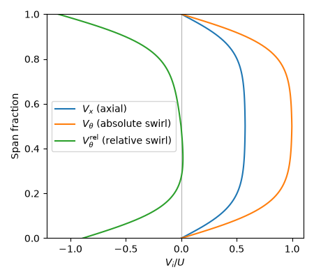

Note
Go to the end to download the full example code.
Basic Block usage¶
The ember.block.Block class holds a flow field over a structured grid and evaluates
thermodynamic and kinematic properties through an attached
ember.fluid equation of state. This example tours the basics: choosing
a shape, setting coordinates and velocities, fixing the thermodynamic state,
working in a rotating frame, and the numpy-like indexing and array operations a
block supports. It closes by plotting a radial profile straight from a block’s
property arrays.
See the Joule cycle example for a worked thermodynamic calculation built on this same interface.
import numpy as np
import matplotlib.pyplot as plt
import ember.block
import ember.fluid
A scalar block: coordinates and velocity¶
With no shape argument a block defaults to a single scalar point of shape
().
Coordinates and velocity components can be set individually, or a velocity
vector can be supplied as an array. Flow angles are derived properties.
block = ember.block.Block()
print(f"Default shape: {block.shape}")
# Set individual coordinates
block.set_x(0.5)
block.set_r(1.0)
block.set_t(0.0)
print(f"Coordinates (x, r, t): {block.xrt}")
# Set velocity components and read back derived angles
block.set_Vx(100.0)
block.set_Vr(0.0)
block.set_Vt(50.0)
print(f"Yaw Alpha = {block.Alpha:.1f} deg, pitch Beta = {block.Beta:.1f} deg")
# Double the velocity vector, setting from array
block.set_Vxrt(2.0 * block.Vxrt)
print(f"Doubled velocity vector: {block.Vxrt}")
Default shape: ()
Coordinates (x, r, t): [0.5 1. 0. ]
Yaw Alpha = 26.6 deg, pitch Beta = 0.0 deg
Doubled velocity vector: [200. 0. 100.]
Thermodynamic state¶
A block needs a fluid before any thermodynamic property can be evaluated. The state is then fixed two properties at a time by the two-property rule.
# Define a perfect gas
fluid = ember.fluid.PerfectFluid(cp=1005.0, gamma=1.4, mu=1e-5, Pr=0.71)
# Read back denstiy and enthalpy from a (P, T) pair.
block.set_fluid(fluid)
block.set_P_T(1e5, 300.0)
print(f"From (P,T): rho = {block.rho:.3f} kg/m^3, h = {block.h:.0f} J/kg")
# A different property pair
block.set_rho_u(1.1, 1e4)
print(f"From (rho, u): T = {block.T:.1f} K")
From (P,T): rho = 1.161 kg/m^3, h = 86143 J/kg
From (rho, u): T = 313.9 K
Setting state independently¶
Coordinates, velocity and thermodynamic state are three independent families.
Setting one gives access to its derived properties but not the others;
reading a property that depends on an unset family raises ValueError.
# Coordinates alone give geometry, but velocity is still unset.
geom = ember.block.Block((2, 2, 2))
geom.set_x(np.array([0.0, 1.0])[:, None, None] * np.ones((2, 2, 2)))
geom.set_r(np.array([0.5, 1.0])[None, :, None] * np.ones((2, 2, 2)))
geom.set_t(np.array([0.0, 0.1])[None, None, :] * np.ones((2, 2, 2)))
print(f"Cell volume = {geom.vol}")
try:
geom.Vx
except ValueError:
print("Reading Vx before set_Vx raises ValueError")
# Velocity alone gives flow angles, but geometry is still unset.
swirl = ember.block.Block()
swirl.set_r(1.0)
swirl.set_Vx(100.0)
swirl.set_Vr(0.0)
swirl.set_Vt(50.0)
print(f"Alpha = {swirl.Alpha:.1f} deg, Beta = {swirl.Beta:.1f} deg")
try:
swirl.x
except ValueError:
print("Reading x before set_x raises ValueError")
# Thermodynamic state alone gives density, but geometry is still unset.
state = ember.block.Block()
state.set_fluid(fluid)
state.set_P_T(1e5, 300.0)
print(f"Density = {state.rho:.3f} kg/m^3")
try:
state.x
except ValueError:
print("Reading x before set_x raises ValueError")
Cell volume = [[[0.0375]]]
Reading Vx before set_Vx raises ValueError
Alpha = 26.6 deg, Beta = 0.0 deg
Reading x before set_x raises ValueError
Density = 1.161 kg/m^3
Reading x before set_x raises ValueError
Shifting the thermodynamic datum¶
The datum (where enthalpy and entropy are zero) can be moved by attaching a
fluid from change_datum(). Pressure and
temperature are unaffected; only enthalpy and entropy shift.
datum = ember.block.Block()
datum.set_fluid(fluid)
datum.set_P_T(1.2e5, 350.0)
datum.set_Vx(0.0)
datum.set_Vr(0.0)
datum.set_Vt(0.0)
print(
f"Original datum: P = {datum.P:.0f} Pa, T = {datum.T:.0f} K\n"
f" h = {datum.h:.0f} J/kg, s = {datum.s:.1f} J/kg/K"
)
datum.set_fluid(fluid.change_datum(101325.0, 288.15))
print(
f"Shifted datum: P = {datum.P:.0f} Pa, T = {datum.T:.0f} K\n"
f" h = {datum.h:.0f} J/kg, s = {datum.s:.1f} J/kg/K"
)
Original datum: P = 120000 Pa, T = 350 K
h = 136393 J/kg, s = 102.6 J/kg/K
Shifted datum: P = 120000 Pa, T = 350 K
h = 144899 J/kg, s = 146.9 J/kg/K
Reference scales¶
A block stores its conserved variables in a non-dimensional backing array,
scaled by a fluid reference density and velocity, and the block’s reference
length — see Reference scales.
The dimensional
conserved variables are independent of this
choice; only the raw conserved_nd array changes.
If we set reference scales matched to the flow, the raw values sit near unity,
which keeps the backing array well-conditioned, while the dimensional values are unchanged.
cons = ember.block.Block()
cons.set_fluid(fluid)
cons.set_r(1.0)
cons.set_P_T(1e5, 300.0)
cons.set_Vx(150.0)
cons.set_Vr(0.0)
cons.set_Vt(60.0)
print("With unit reference scales:")
print(f" conserved = {cons.conserved}")
print(f" conserved_nd = {cons.conserved_nd}") # Same as dimensional
# Choose reference scales matched to the flow state.
cons.set_fluid(fluid.change_ref(rho_ref=float(cons.rho), V_ref=300.0, Rgas_ref=287.0))
cons.set_L_ref(1.0)
print("With matched reference scales:")
print(f" conserved = {cons.conserved}") # Dimensional values unchanged
print(f" conserved_nd = {cons.conserved_nd}") # Raw backing array near unity
With unit reference scales:
conserved = [1.1608626e+00 1.7412938e+02 0.0000000e+00 6.9651756e+01 1.5149257e+04]
conserved_nd = [1.1608626e+00 1.7412938e+02 0.0000000e+00 6.9651756e+01 1.5149257e+04]
With matched reference scales:
conserved = [1.1608622e+00 1.7412933e+02 0.0000000e+00 6.9651733e+01 1.5149268e+04]
conserved_nd = [0.9999997 0.49999985 0. 0.19999996 0.14500012]
Rotating reference frame¶
By default the angular velocity Omega is zero, so absolute and relative
circumferential
velocities are equal and the stagnation pressure equals its relative
counterpart. Setting a rotation rate splits the absolute and relative swirl
and changes the relative stagnation pressure, without affecting the absolute
stagnation pressure or the static pressure. Quantities suffixed _rel are
evaluated in the rotating frame.
rotor = ember.block.Block()
rotor.set_fluid(fluid)
rotor.set_r(1.0)
rotor.set_P_T(1e5, 300.0)
rotor.set_Vx(0.0)
rotor.set_Vr(0.0)
rotor.set_Vt(100.0)
print("At rest:")
print(f" Vt = {rotor.Vt:.1f} m/s, Vt_rel = {rotor.Vt_rel:.1f} m/s")
print(f" Po = {rotor.Po:.0f} Pa, Po_rel = {rotor.Po_rel:.0f} Pa")
rotor.set_Omega(50.0) # rad/s
print("Spinning at Omega = 50 rad/s:")
print(f" Vt = {rotor.Vt:.1f} m/s, Vt_rel = {rotor.Vt_rel:.1f} m/s")
print(f" Po = {rotor.Po:.0f} Pa, Po_rel = {rotor.Po_rel:.0f} Pa")
At rest:
Vt = 100.0 m/s, Vt_rel = 100.0 m/s
Po = 105926 Pa, Po_rel = 105926 Pa
Spinning at Omega = 50 rad/s:
Vt = 100.0 m/s, Vt_rel = 50.0 m/s
Po = 105926 Pa, Po_rel = 101459 Pa
Array-valued blocks and broadcasting¶
A shape argument allocates a multidimensional field. Inputs to the setters broadcast to the block shape, so a scalar fills the whole block and a 1-D array fills along one axis.
field = ember.block.Block(shape=(5, 6, 5))
field.set_fluid(fluid)
field.set_x(1.0) # Scalar broadcasts everywhere
field.set_r(np.linspace(1.0, 2.0, field.ni)) # Varies along the first axis
print(f"Block shape {field.shape}, r spans {field.r.min()}--{field.r.max()}")
Block shape (5, 6, 5), r spans 1.0--2.0
Indexing and slicing¶
Blocks index like numpy arrays. An integer or tuple selects a point or sub-block; a slice returns a smaller block sharing the data. Every result is itself a block with all properties available.
line = ember.block.Block(shape=(10,))
line.set_x(np.arange(line.ni))
print(f"line[5].x = {line[5].x}, line[-2].x = {line[-2].x}")
print(f"line[3:6].x = {line[3:6].x}")
grid = ember.block.Block(shape=(3, 2))
grid.set_x(np.arange(grid.size).reshape(grid.shape))
print(f"grid[0, :].x = {grid[0, :].x}, grid[:, 1].x = {grid[:, 1].x}")
line[5].x = 5.0, line[-2].x = 8.0
line[3:6].x = [3. 4. 5.]
grid[0, :].x = [0. 1.], grid[:, 1].x = [1. 3. 5.]
Copying and reshaping¶
copy makes an independent block; transpose, flat and reshape
rearrange the axes (as views where possible).
original = ember.block.Block()
original.set_xrt(np.array([2.0, 3.0, 4.0]))
modified = original.copy()
modified.set_x(-6.0)
print(f"copy is independent: original.x = {original.x}, modified.x = {modified.x}")
shaped = ember.block.Block(shape=(4, 3))
shaped.set_x(np.arange(shaped.size).reshape(shaped.shape))
print(
f"shape {shaped.shape} -> transpose {shaped.transpose().shape} "
f"-> flat {shaped.flat().shape} -> reshape {shaped.reshape((2, 6)).shape}"
)
copy is independent: original.x = 2.0, modified.x = -6.0
shape (4, 3) -> transpose (3, 4) -> flat (12,) -> reshape (2, 6)
A radial profile: setters in, derived properties out¶
To tie the pieces together, build a one-dimensional radial line through an
annulus and read back derived properties that the setters never touched
directly. The thermodynamic state is uniform — the same static pressure and
temperature at every radius — but the velocity varies with radius like a
turbomachinery inlet profile: a uniform free stream with a smooth boundary
layer growing in from each annulus wall. The flow is set as a speed
and a fixed yaw (swirl) angle through set_V_Alpha_Beta(),
and the block spins in a rotating frame via set_Omega().
We never set the axial velocity or the relative swirl directly. They fall out
of the setters: Vx is the axial projection of the
speed, and Vt_rel subtracts the local blade speed
\(\Omega r\) from the absolute swirl.
r_hub, r_cas = 0.4, 0.5
profile = ember.block.Block(shape=(101,))
profile.set_fluid(fluid)
r = np.linspace(r_hub, r_cas, profile.ni)
profile.set_r(r)
# Uniform static state across the span.
profile.set_P_T(1e5, 300.0)
# Smooth boundary layers growing in from the hub and casing walls: a tanh
# profile rolls off to zero at each wall without the kink of a power law.
V_inf, delta = 150.0, 0.015
d_wall = np.minimum(r - r_hub, r_cas - r)
V = V_inf * np.tanh(d_wall / delta)
# A fixed 60 deg swirl angle; no pitch. Speed and angles in, velocity out.
profile.set_V_Alpha_Beta(V, 60.0, 0.0)
# Spin the frame at the blade speed for the mean radius.
r_mid = 0.5 * (r_hub + r_cas)
Omega = V_inf * np.sin(np.radians(60.0)) / r_mid
profile.set_Omega(Omega)
# Non-dimensionalise: span fraction on the ordinate, velocity over blade speed
# U = Omega * r_mid on the abscissa.
span = (r - r_hub) / (r_cas - r_hub)
U = Omega * r_mid
fig, ax = plt.subplots(figsize=(4.5, 4.0))
ax.plot(profile.Vx / U, span, label=r"$V_x$ (axial)")
ax.plot(profile.Vt / U, span, label=r"$V_\theta$ (absolute swirl)")
ax.plot(profile.Vt_rel / U, span, label=r"$V_\theta^\mathrm{rel}$ (relative swirl)")
ax.axvline(0.0, color="0.7", lw=0.8, zorder=0)
ax.set_xlabel(r"$V_i / U$")
ax.set_ylabel("Span fraction")
ax.set_ylim(0.0, 1.0)
ax.legend(loc="center left")
fig.tight_layout()
plt.show()

Total running time of the script: (0 minutes 0.173 seconds)